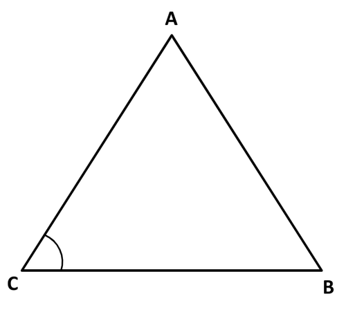

TRIÁNGULO EQUILÁTERO

En geometría, un triángulo equilátero es un polígono regular, es decir, tiene sus tres lados iguales.
En la geometría euclídea tradicional, los triángulos equiláteros también son equiangulares, es decir, los tres ángulos internos son iguales.
Este tipo de triángulo es un caso muy particular dentro de los tipos de triángulo según la longitud de sus lados.
Cabe señalar que el triángulo equilátero es a su vez acutángulo porque todos sus ángulos internos son agudos. Es decir, todos sus ángulos son menores que 90º.